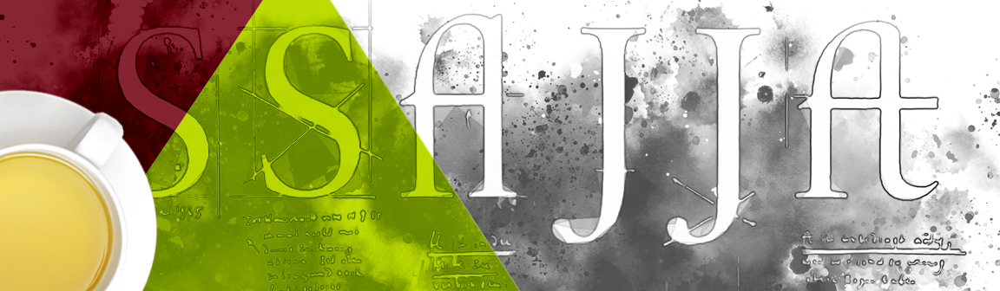
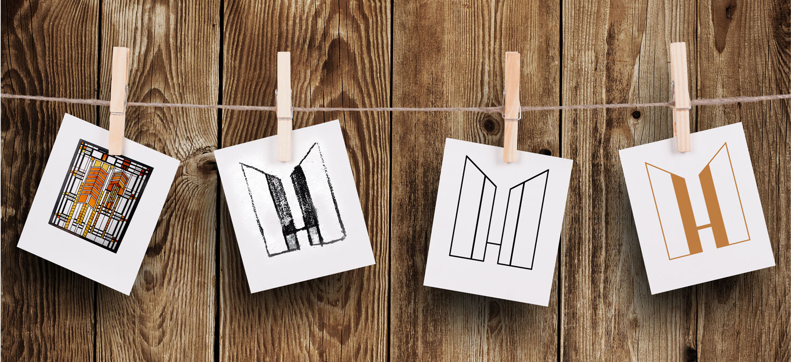
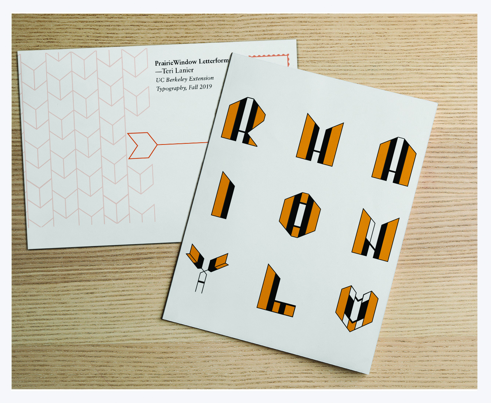
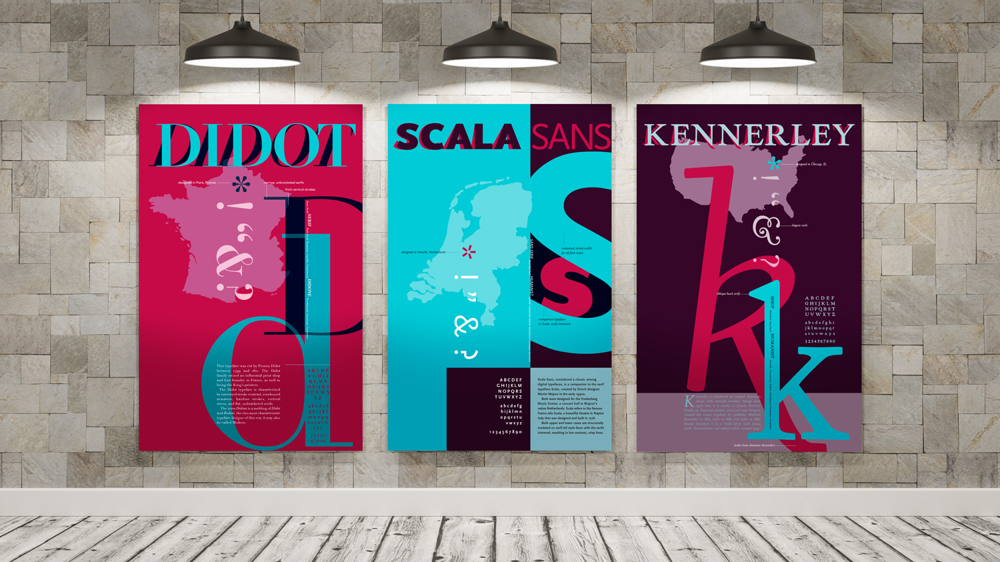
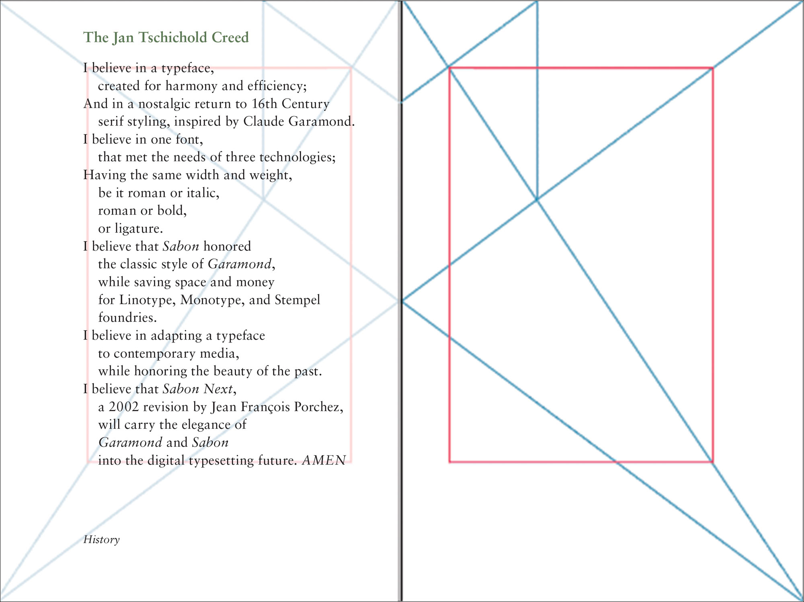
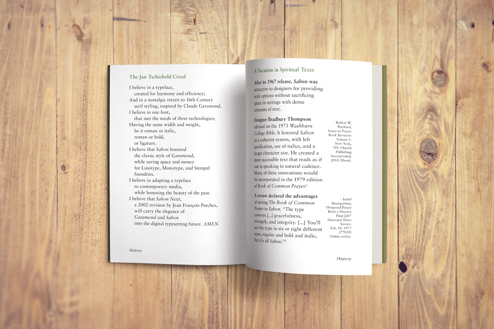
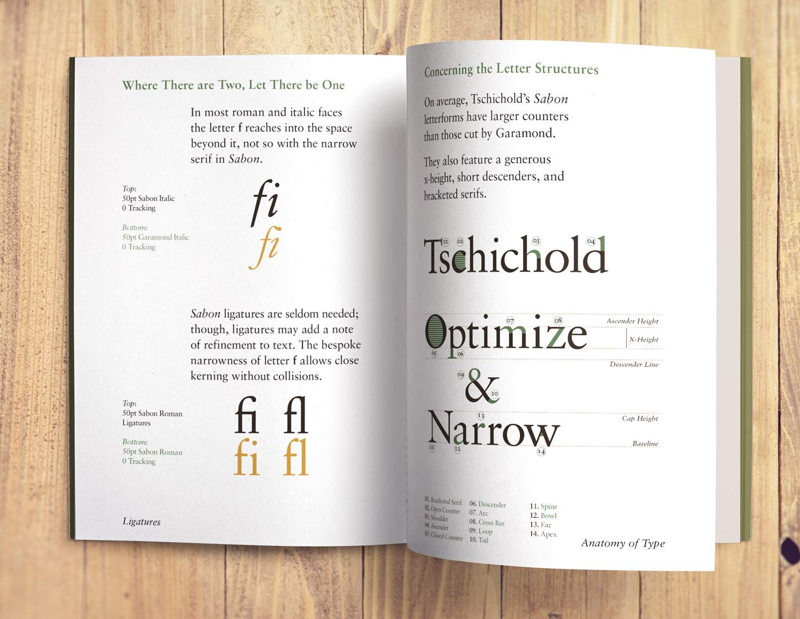

Typography: Visual Etiquette
Illustrator, InDesign
Twelve weeks' exploration in typography were the foundation from which I could launch design campaigns. Understanding type anatomy and its interaction with hierarchy, grids, and typesetting are born out of practice, lots of practice!
Prairie Window Letterforms
My custom lettering was inspired by Frank Lloyd Wright's Prairie Windows series from 1900-1914. The juxtaposition of thick and thin strokes with an emphasis on the vertical stems is designed to emulate the stained glass from the Arts and Craft Movement.

Typeface Posters
I researched three typefaces and designed a poster series to champion their nuances and showcase attributes.
The Book of Sabon Prayer
To celebrate the historic relevance of Swiss designer Jan Tschichold's Sabon typeface as the choice lettering for spiritual texts, I created a book in the style of the 1979 Episcopal The Book of Common Prayer. The booklet includes basic type anatomy and a brief history of Sabon and Tschichold. The entire book is available to read here.
I formatted the pages to the exacting standards of Tschichold's ideal text display system. He felt this grid was the best design for the reader.
